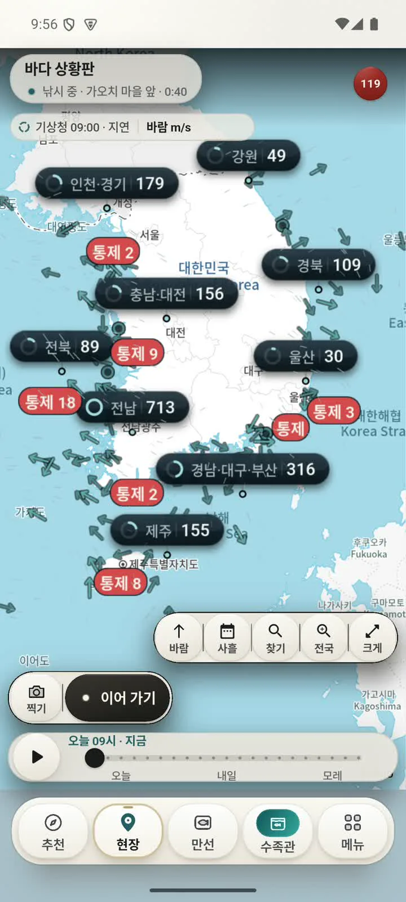
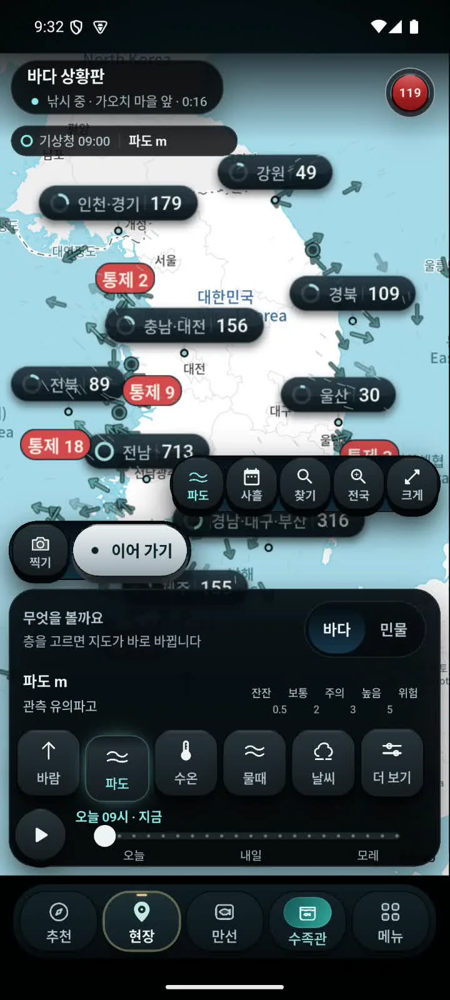
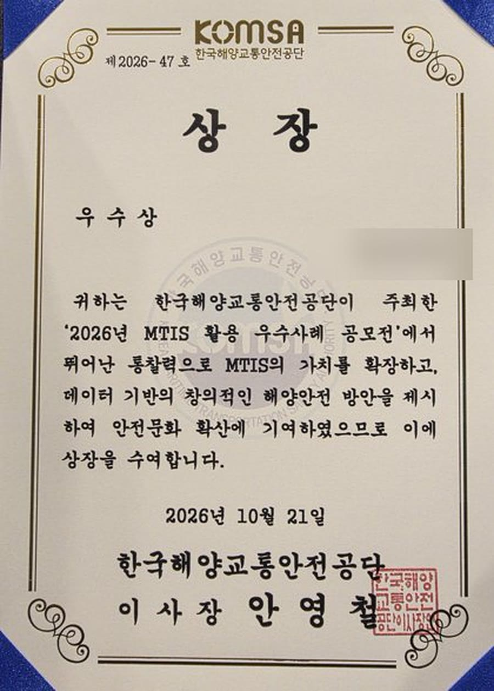

소개 영상
살아 움직이는 바다를그대로 담았습니다
실제 앱 화면 녹화(에뮬레이터)
바다 상황판
바람이 어디서 어디로,
얼마나
전국 바다 위로 흐르는 가는 선이 풍향과 세기를 보여 줍니다. 화살표는 불어 가는 쪽, 깃의 수는 세기입니다.
기상청 해양 관측 · 관측 시각 표시 · 지점 70km 밖은 그리지 않음
지역별
파고
층을 «파도»로 바꾸면 바다 위 지점마다 지금의 파고(m)가 떠오릅니다.
파고 관측값 · 지점별 표시
바다의
온도
관측소 수온을 색과 숫자로. 관측소 이름과 거리도 함께 보여 줍니다.
관측소 수온(°C)
장소를 누르면
바로 채워집니다
물때·바람·파도·수온·날씨가 하나의 원형 궤도에. 값마다 출처와 관측 시각이 붙습니다.
국립해양조사원 조위관측소 · 기상청
낮과 밤
해가 지면,
눈부시지 않게
해 뜰 때는 밝은 화면, 해 질 때는 어두운 화면으로 저절로 바뀝니다. 손잡이를 밀어 비교해 보세요.


시연 영상
처음부터 끝까지,실제 앱 그대로
실제 앱 화면 녹화(에뮬레이터)

2026 MTIS 활용 우수사례 공모전 우수작 선정한국해양교통안전공단 · 해양교통안전정보(MTIS) 활용
바다와 민물,
오늘의 물을 한눈에
App Store
Google Play
출시 예정